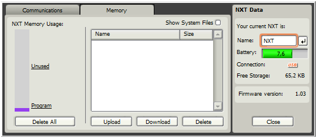

Práce se soubory
Správa souborů a paměti NXT kostky
Občas je zapotřebí spravovat
soubory a paměť NXT kostky. Můžete to udělat ze záložku
Memory z okna NXT (Obr. 1), které spustíte tlačítkem z Controlleru umístěným
vlevo nahoře. Záložka Memory poskytuje grafický přehled využití
paměti NXT kostky. Můžete poslat programy, zvuky, grafické a další
soubory z počítače do NXT kostky. Také můžete kopírovat
a mazat soubory, které jsou už na NXT kostce uložené.

Obr. 1: Záložka Memory okna NXT
Každá NXT kostka má dostupnou
paměť o velikosti zhruba 130,7 kB. Část paměti
je obsazena příkladovými programy, grafickými a zvukovými soubory,
které jsou výrobcem nahrány na NXT zařízení.
Zbývá asi 56 kB paměti pro soubory, které sami vytvoříte a stáhnete.
Smazání souboru
Pokud překročíte
velikost volné paměti můžete smazat nějaké
soubory z NXT kostky. Pomocí grafického přehledu využití
paměti na levé straně záložky zjistíte, který
typ souborů zabírá většinu paměti.
Klikněte na jméno kategorie příslušného typu souborů a zobrazí
se seznam souborů v dané kategorii. Klikněte na soubor ze seznamu,
který chcete smazat a klikněte na tlačítko Delete
Smazání všech vytvořených souborů
Můžete smazat
všechny vaše vytvořené soubory a vyčistit paměť
NXT kostky kliknutím na tlačítko Delete All. Smažete tak všechny
soubory, které jste kdy poslali do NXT kostky a přeorganizuje se paměť
tak, aby bylo co nejvíce volného místa pro nové soubory. Systémové soubory,
které byly v továrně přednahrány, smazány nebudou.